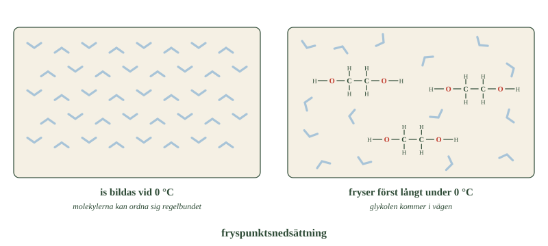
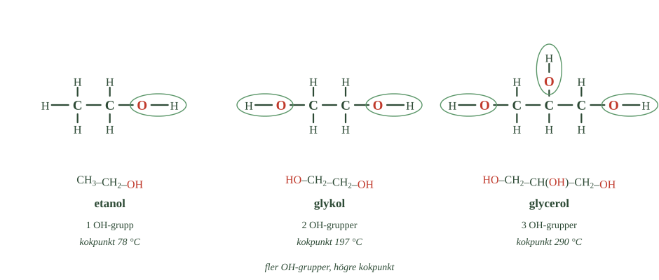

- Vad betyder delarna i namnet etandiol?
- Vad kallas en alkohol med två hydroxylgrupper?
- Vad måste vattenmolekylerna göra för att det ska bli is?
- Hur hindrar glykolen det?
- Varför är glykol särskilt farlig för djur?
Hittills har alla alkoholer haft en hydroxylgrupp. Men det finns ingen regel som säger att det måste vara så.
En molekyl kan ha två OH-grupper. Eller tre. Eller fler.
Och när antalet ökar ändras egenskaperna — ordentligt. Molekylerna håller hårdare i vatten och i varandra, vilket påverkar både hur de löser sig och när de kokar.
Vi tittar på två exempel: glykol med två hydroxylgrupper, och glycerol med tre.
Namnet berättar uppbyggnaden
Ämnet som i vardagsspråk kallas glykol heter egentligen etandiol.
Läs namnet i delar:
etan- betyder två kolatomer di- betyder två -ol betyder alkohol
Alltså: en alkohol med två kolatomer och två hydroxylgrupper.
Formeln skrivs \(\ce{HO-CH2-CH2-OH}\). En OH-grupp i vardera änden, med två kolatomer emellan.
En alkohol med två hydroxylgrupper kallas tvåvärd.
Jämför med etanol
Etanol har också två kolatomer. Men bara en OH-grupp.
Det är hela skillnaden mellan ämnena — en enda grupp till. Och ändå beter de sig olika nog för att användas till helt olika saker.
Glykol sänker fryspunkten
Glykolens viktigaste användning är i kylarvätska i bilmotorer.
Vatten är utmärkt på att transportera bort värme, och det är precis vad ett kylsystem ska göra. Problemet är att vatten fryser vid 0 °C. En bil som står ute en vinternatt får sönderfrusen motor.
Blandar man i glykol ändras det.
Tänk på hur is bildas. Vattenmolekylerna måste ordna sig i ett bestämt, regelbundet mönster — ett kristallmönster. Först då blir det is.
Glykolmolekylerna lägger sig mellan vattenmolekylerna och kommer i vägen. Mönstret blir svårare att bilda, och blandningen måste kylas mycket mer innan den fryser.
Det kallas fryspunktsnedsättning.
- Jämför mönstren i de två panelerna. Vad är skillnaden?
- Hur många OH-grupper har varje glykolmolekyl?
- Varför fryser blandningen först vid en lägre temperatur?

Glykolblandningen höjer dessutom kokpunkten, vilket är lika viktigt i en motor som blir het.
Glykol är mycket giftig
Etandiol är giftigt, och precis som för metanol är det mest nedbrytningen i kroppen som är farlig.
När kroppen bryter ner glykol bildas ämnen som skadar njurarna och stör kroppens syra-basbalans. Förgiftning kan bli livshotande.
En särskild fara: glykol smakar sött. Djur som hittar utspilld kylarvätska kan därför lockas att dricka den.
- Vad betyder delarna i namnet etandiol?
- Vad kallas en alkohol med två hydroxylgrupper?
- Vad måste vattenmolekylerna göra för att det ska bli is?
- Hur hindrar glykolen det?
- Varför är glykol särskilt farlig för djur?
En alkohol behöver inte ha bara en hydroxylgrupp. En molekyl kan innehålla två, tre eller fler.
När antalet ökar förändras egenskaperna. Molekylerna samverkar starkare med vatten och med varandra, vilket påverkar löslighet, kokpunkt och användning.
Två viktiga exempel är glykol med två hydroxylgrupper och glycerol med tre.
Etandiol kallas glykol
Det ämne som i vardagsspråk kallas glykol heter egentligen etandiol.
Molekylen har två kolatomer med en hydroxylgrupp på vardera:
\(\ce{HO-CH2-CH2-OH}\)
Ändelsen berättar uppbyggnaden. di- betyder två och -ol att det är en alkohol. En alkohol med två hydroxylgrupper kallas tvåvärd.
Jämför med etanol: samma antal kolatomer, men bara en OH-grupp. Det räcker för att ämnena ska bli olika.
Glykol sänker fryspunkten
Glykolens viktigaste användning är i kylarvätska.
Vatten transporterar värme mycket bra och passar därför i ett kylsystem. Problemet är att det fryser vid 0 °C.
Blandas glykol i ändras det. Glykolmolekylerna hamnar mellan vattenmolekylerna och stör deras möjlighet att ordna sig i det regelbundna mönster som is kräver. Blandningen måste därför kylas betydligt mer innan den fryser.
Det kallas fryspunktsnedsättning.
Glykolblandningen höjer dessutom kokpunkten, vilket är lika viktigt i en varm motor.
Glykol är mycket giftig
Etandiol är giftigt, och det mesta av faran uppstår när kroppen bryter ner ämnet. Då bildas nedbrytningsprodukter som skadar njurarna och stör kroppens syra-basbalans. Förgiftning kan bli livshotande.
Ämnet har dessutom en sötaktig smak. Det gör det särskilt farligt för djur, som kan lockas att dricka utspilld kylarvätska.
Det spelar ingen roll vad man löser i vattnet
Standardtexten förklarar fryspunktsnedsättningen med att glykolmolekylerna kommer i vägen för iskristallens mönster. Det är rätt bild, och den fungerar. Men den antyder något som inte stämmer: att det skulle vara just glykol som har den förmågan.
Det har den inte. Vilket löst ämne som helst sänker fryspunkten.
Salt gör det — det är därför man saltar vägar. Socker gör det — det är därför glass inte fryser stenhård. Etanol gör det. Glykol gör det.
Och mer överraskande: hur mycket fryspunkten sjunker beror inte på vilket ämne som lösts, utan på hur många partiklar som finns i lösningen. En sockermolekyl och en glykolmolekyl sänker fryspunkten exakt lika mycket.
Egenskaper som bara beror på antalet partiklar kallas kolligativa. Fryspunktsnedsättning är en, och kokpunktshöjning är en annan — det är därför glykolblandningen både fryser lägre och kokar högre.
Salt är extra effektivt av ett kemiskt skäl: varje formelenhet NaCl delar upp sig i två joner i vattnet, och därmed räknas den som två partiklar.
Varför används då glykol och inte socker i kylare? Inte för att kemin är bättre, utan för att glykol är flytande, inte korroderar metallen, inte blir klibbigt och tål motorns temperaturer. Valet är praktiskt, inte kemiskt.
Om modellen. Att glykolen "kommer i vägen" är en användbar bild av vad som händer i vätskan. Men det viktiga är att effekten är allmän — den hör till lösningar, inte till glykol. Och en regel som gäller allmänt är alltid mer värd att kunna än ett specialfall.
- Vad betyder delarna i namnet propantriol?
- Vad är skillnaden mellan ett streck och en parentes i en formel?
- Varför binder glycerol vatten så bra?
- Var används glycerol, och varför just där?
- Vad gjorde Alfred Nobel med nitroglycerinet?
Namnet berättar uppbyggnaden här också
En alkohol med tre hydroxylgrupper är glycerol. Det systematiska namnet är propantriol.
Läs det i delar, precis som förut:
propan- betyder tre kolatomer tri- betyder tre -ol betyder alkohol
Glycerol kallas därför trevärd alkohol.
Parentesen visar en grupp som sitter på sidan
Glykol skrevs \(\ce{HO-CH2-CH2-OH}\). Den formeln går att läsa rakt igenom, från ena änden till den andra.
Glycerol går inte att skriva så. Skälet är att den mellersta kolatomen bär en OH-grupp som inte sitter i kedjan utan på sidan av den.
Då används en parentes:
\(\ce{HO-CH2-CH(OH)-CH2-OH}\)
Läs långsamt. Först en hydroxylgrupp. Sedan en kolatom med två väten. Sedan mittenkolatomen — och parentesen (OH) betyder att en hydroxylgrupp hänger av från just den. Sedan en kolatom till med två väten, och sist en tredje hydroxylgrupp.
Regeln är enkel:
Ett streck går vidare i kedjan. En parentes går ut åt sidan.
Du ser molekylen utritad i bilden i nästa underdel.
Glycerol binder vatten
Glycerol är en färglös, trögflytande vätska — den rinner långsamt, ungefär som sirap.
Den är mycket bra på att dra till sig och hålla kvar vatten.
Det beror på de tre OH-grupperna. Varje grupp kan samverka med vattenmolekyler omkring sig. Med tre grupper får molekylen många sådana möjligheter, och den håller hårt.
Därför används glycerol som fuktighetsbevarande ämne. I hudkrämer håller det kvar vatten i huden så att den inte torkar. I livsmedel håller det produkter mjuka.
Glycerol är råvara till nitroglycerin
Glycerol kan reagera med salpetersyra. Då bildas nitroglycerin — ett mycket energirikt ämne som kan sönderfalla explosionsartat.
Nitroglycerin var länge nästan omöjligt att använda, eftersom det kunde explodera av en stöt.
Alfred Nobel hittade ett sätt att göra det hanterbart, och tog 1867 patent på resultatet: dynamit.
Samma ämne har en helt annan användning. I mycket små doser vidgar nitroglycerin blodkärlen, och används därför som medicin vid kärlkramp.
Ett ämne är alltså varken bra eller dåligt i sig. Dosen och sammanhanget avgör.
- Vad betyder delarna i namnet propantriol?
- Vad är skillnaden mellan ett streck och en parentes i en formel?
- Varför binder glycerol vatten så bra?
- Var används glycerol, och varför just där?
- Vad gjorde Alfred Nobel med nitroglycerinet?
Propantriol kallas glycerol
En alkohol med tre hydroxylgrupper är glycerol. Det systematiska namnet är propantriol, och namnet avslöjar uppbyggnaden: propan- betyder tre kolatomer, tri- betyder tre, och -ol att det är en alkohol.
Glycerol kallas därför trevärd alkohol.
Parentesen visar en grupp som sitter på sidan
Glykol skrevs \(\ce{HO-CH2-CH2-OH}\). Kedjan gick att läsa rakt igenom, från ena änden till den andra.
Glycerol går inte att skriva så, och skälet är att den mellersta kolatomen bär en OH-grupp som inte sitter i kedjan utan på sidan av den.
Då används en parentes:
\(\ce{HO-CH2-CH(OH)-CH2-OH}\)
Läs den långsamt. Först en hydroxylgrupp. Sedan en kolatom med två väten. Sedan mittenkolatomen — och parentesen (OH) betyder att en hydroxylgrupp hänger av från just den. Sedan ytterligare en kolatom med två väten, och sist en tredje hydroxylgrupp.
Parentesen betyder alltså något annat än strecken. Ett streck går vidare i kedjan. En parentes går ut åt sidan.
Du ser molekylen utritad i bilden i nästa underdel.
Glycerol binder vatten
Glycerol är en färglös, trögflytande vätska som är mycket bra på att dra till sig och hålla kvar vatten.
Det beror på de tre OH-grupperna. Varje grupp kan samverka med vattenmolekyler omkring sig, och med tre får molekylen många sådana möjligheter.
Därför används glycerol som fuktighetsbevarande ämne — i hudkrämer, där det håller kvar vatten i huden, och i livsmedel, där det håller produkter mjuka.
Samma kemiska egenskap ligger alltså bakom flera helt olika användningar.
Glycerol är råvara till nitroglycerin
Glycerol kan reagera med salpetersyra och bilda nitroglycerin — ett mycket energirikt ämne som kan sönderfalla explosionsartat.
Det var svårhanterligt tills Alfred Nobel hittade ett sätt att göra det stabilt. År 1867 tog han patent på resultatet: dynamit.
Samma ämne har en helt annan användning inom medicinen. I mycket små doser vidgar nitroglycerin blodkärlen och används vid kärlkramp.
Ett ämne är alltså varken bra eller dåligt i sig. Dosen och sammanhanget avgör.
Glycerol drar vatten ur allt — också ur bakterier
Standardtexten säger att glycerol håller kvar vatten och därför används i hudkrämer. Det stämmer, men det beskriver bara halva egenskapen.
Ett ämne som drar till sig vatten ur omgivningen kallas hygroskopiskt. Glycerol är ett av de mest hygroskopiska ämnen som är ofarliga nog att användas i mat och på hud.
Det betyder att glycerol inte bara behåller vatten som redan finns. Den tar vatten från det som ligger runt omkring.
I en hudkräm är det önskat — glycerolen drar fukt ur luften och ur hudens djupare lager och håller den vid ytan. I hög koncentration blir samma egenskap ett problem: ren glycerol på huden torkar ut den i stället, eftersom den drar mer vatten än den ger.
Samma egenskap gör glycerol konserverande. En bakterie som hamnar i en tillräckligt koncentrerad glycerollösning förlorar sitt vatten till omgivningen och kan inte fungera. Det är samma princip som gör att honung, sylt och saltad fisk håller sig — vattnet är inte borta, men det är upptaget.
Därför används glycerol i läkemedel och kosmetika inte bara för fuktens skull, utan också för att hålla produkterna fria från mikroorganismer.
Om modellen. "Glycerol binder vatten" låter som en egenskap hos glycerolen ensam. Det handlar i själva verket om ett förhållande mellan glycerolen och det som finns runt omkring. Är omgivningen fuktigare drar glycerolen till sig vatten. Är den torrare ger den ifrån sig. Riktningen bestäms inte av ämnet utan av skillnaden.
- Hur många hydroxylgrupper har etanol, glykol och glycerol?
- Vad händer med samverkan med vatten när antalet grupper ökar?
- Vad mer än antalet OH-grupper påverkar hur vattenlöst ett ämne är?
- Vad har kylarvätska och hudkräm gemensamt?
- Hur ändras kokpunkten när molekylen får fler hydroxylgrupper?
Ställ de tre bredvid varandra
Nu har du mött tre alkoholer med olika många hydroxylgrupper:
etanol har en glykol har två glycerol har tre
Ju fler grupper, desto fler platser på molekylen som kan samverka med vattenmolekyler.
- Räkna de markerade grupperna i varje molekyl.
- Följ kokpunkterna. Hur ändras de?
- Titta på den mellersta kolatomen i glycerol. Hur syns den i formeln under?

Sambandet är rakt:
fler hydroxylgrupper \(\rightarrow\) starkare samverkan med vatten
Men kolkedjan spelar också roll
Antalet OH-grupper är inte allt.
Kom ihåg dragkampen från 1.3. Hydroxylgruppen gör molekylen vattenvänlig, kolvätedelen gör den vattenskyende.
I en stor molekyl med en lång kolvätedel kan några få OH-grupper inte väga upp. Då blir ämnet ändå inte vattenlösligt.
Etanol, glykol och glycerol är alla små molekyler. Hos dem dominerar OH-grupperna, och därför syns sambandet så tydligt.
Därför fungerar kylarvätska och hudkräm
En bilmotor och en hudkräm har inte mycket gemensamt.
Kemiskt bygger de på samma egenskap.
Glykolen samverkar starkt med vatten och stör vattenmolekylernas möjlighet att bilda iskristaller. Därför sjunker fryspunkten, och kylaren fryser inte sönder.
Glycerolen samverkar ännu starkare och håller kvar vattenmolekyler omkring sig. Därför torkar inte huden.
Två helt olika produkter. En och samma kemi.
Kokpunkten stiger också
Hydroxylgrupperna får inte bara molekylerna att dras till vatten. De får dem också att dras till varandra.
Det syns direkt på kokpunkterna:
etanol 78 °C glykol 197 °C glycerol 290 °C
Fler hydroxylgrupper betyder starkare attraktion mellan molekylerna. Och starkare attraktion betyder att det krävs mer energi för att slita loss dem — alltså högre temperatur.
Det här är vad hela delkapitlet handlar om
Titta på kedjan:
molekylens struktur \(\rightarrow\) krafterna mellan molekylerna \(\rightarrow\) ämnets egenskaper
Hydroxylgruppen förklarar både alkoholernas höga kokpunkter och deras samverkan med vatten. En enda liten grupp, och så mycket följer av den.
Det är därför funktionella grupper är så viktiga. Vet du vilken grupp en molekyl har, kan du redan börja gissa hur ämnet beter sig.
- Hur många hydroxylgrupper har etanol, glykol och glycerol?
- Vad händer med samverkan med vatten när antalet grupper ökar?
- Vad mer än antalet OH-grupper påverkar hur vattenlöst ett ämne är?
- Vad har kylarvätska och hudkräm gemensamt?
- Hur ändras kokpunkten när molekylen får fler hydroxylgrupper?
Antalet OH-grupper påverkar egenskaperna
Ställ de tre alkoholerna bredvid varandra. Etanol har en hydroxylgrupp, glykol två, glycerol tre.
Ju fler grupper, desto fler platser som kan samverka med vattenmolekyler. Sambandet är tydligt:
fler hydroxylgrupper \(\rightarrow\) starkare samverkan med vatten
Men antalet är inte allt. Kolkedjans storlek spelar också roll — i en stor molekyl kan en lång kolvätedel motverka effekten av några få OH-grupper. Hos etanol, glykol och glycerol är molekylerna små, och därför syns sambandet så klart.
Därför fungerar kylarvätska och hudkräm
En bilmotor och en hudkräm har inte mycket gemensamt. Kemiskt bygger de på samma egenskap.
Glykolen stör vattnets möjlighet att bilda iskristaller, och därför sjunker fryspunkten. Glycerolen håller kvar vattenmolekyler omkring sig, och därför torkar inte huden.
I båda fallen är det hydroxylgruppernas samverkan med vatten som avgör.
Kokpunkten stiger också
Hydroxylgrupperna får inte bara molekylerna att dras till vatten. De får dem också att dras till varandra.
Det syns på kokpunkterna:
etanol 78 °C · glykol 197 °C · glycerol 290 °C
Fler hydroxylgrupper betyder starkare attraktion mellan molekylerna. Då krävs mer energi för att skilja dem åt.
Här möts flera delar av kemin: molekylens struktur \(\rightarrow\) krafterna mellan molekylerna \(\rightarrow\) ämnets egenskaper.
Det är därför funktionella grupper är så viktiga. Vet man vilken grupp en molekyl innehåller kan man börja förutsäga hur ämnet beter sig.
Antalet grupper är inte hela sanningen
Standardtexten ger sambandet: fler hydroxylgrupper ger starkare samverkan med vatten och högre kokpunkt. Det stämmer för etanol, glykol och glycerol, och det är rätt slutsats att dra av de tre exemplen.
Men det finns ett villkor som texten nämner i förbigående och som är värt att ta på allvar: grupperna måste kunna nå varandra.
En hydroxylgrupp bildar vätebindningar åt två håll — den kan ge sin väteatom till en annan molekyl, och ta emot en väteatom på sitt syre. Med tre grupper på en liten molekyl blir det många möjliga bindningar, och därav glycerolens kokpunkt på 290 grader.
Men grupperna kan också binda inom samma molekyl. Sitter två OH-grupper nära varandra på rätt sätt kan de ta varandra i stället för att binda till grannmolekylerna. Då blir attraktionen mellan molekylerna svagare än antalet grupper antyder.
Det är därför två ämnen med lika många hydroxylgrupper kan ha olika kokpunkt beroende på var grupperna sitter.
Och det förklarar en sak till. Socker är fulla av hydroxylgrupper — glukos har fem. Enligt regeln borde socker koka vid en enorm temperatur. I stället sönderfaller det innan det hinner koka. Vätebindningarna har blivit så många och så starka att molekylen går sönder före den slipper loss.
Om modellen. "Fler grupper, starkare samverkan" är en bra tumregel och håller för de molekyler du mött. Men den förutsätter att grupperna är vända utåt och kan nå grannarna. Struktur handlar inte bara om vad en molekyl innehåller, utan om hur den är formad — och det gäller varje regel du kommer att möta i organisk kemi.
Laddar övningskort…
Laddar frågor ...